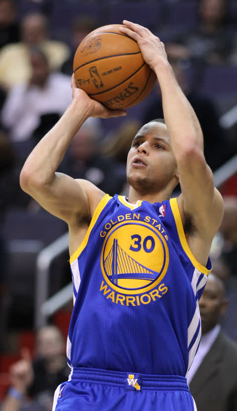
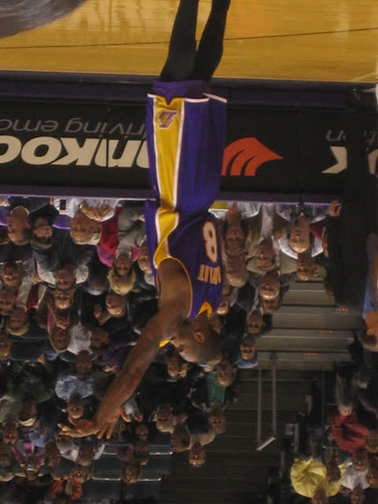

双动作同步对比台
▶ 同步播放
◀ -2%
+2% ▶
1x
0.5x
0.2x
0%
纯侧面 90°
前右 45°
正面
背面
手腕特写
A
正式游戏真实原版（motion.js + tripo）
库里 Curry · 极速一段式
克莱 Klay · 教科书一段式
科比 Kobe · 高跳滞空后仰
布克 Booker · 高跳紧凑干脆
📋 复制 A 参数
加载中…
B
正式游戏真实原版（motion.js + tripo）
库里 Curry · 极速一段式
克莱 Klay · 教科书一段式
科比 Kobe · 高跳滞空后仰
布克 Booker · 高跳紧凑干脆
📋 复制 B 参数
加载中…
真实参考


库里实拍：额上发际线置球、高肘顶起、自然45°托腕
已复制